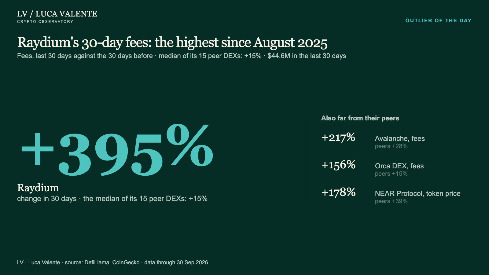

Outlier of the day · 1 Oct 2026
Raydium's 30-day fees: the highest since August 2025


Reading
Raydium was the protocol farthest from its peers in the 30 days to 30 Sep 2026: +395%, against a peer median of +15%. The next largest gaps were Avalanche (fees, +217%) and Orca DEX (fees, +156%). Each figure compares one protocol with the median of its own sector, one protocol per family.
Data through 30 Sep 2026 · Source: DefiLlama, CoinGecko · Code & data on GitHub